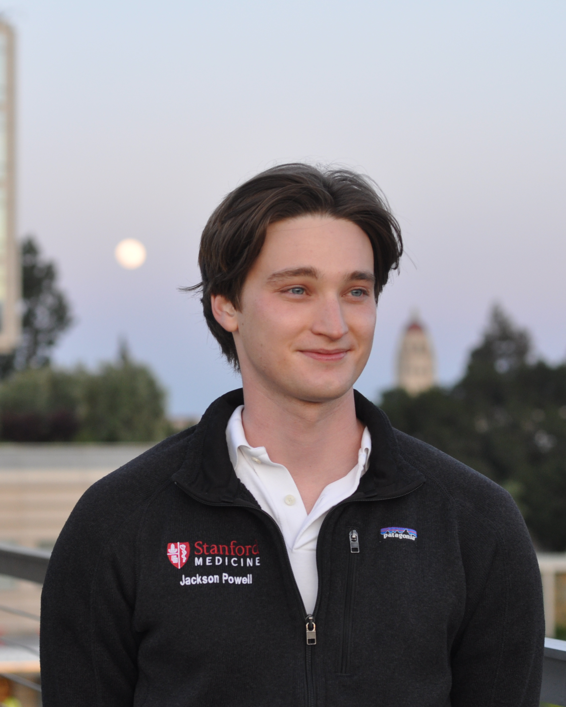

Medical Scientist Training Program
Stanford University, School of Medicine
X@stanford.edu, [X = powellj]
Hello, and thank you for visiting! I am a second year MD-PhD at Stanford in the
Deisseroth Lab, most interested in
brain-computer interfaces and neuromodulation with the long-term goal of becoming a neurosurgeon. There
is a lot to look forward to in the field, and I am very excited for the future.
My Stanford profile can be found
here. My most up-to-date professional
information can be found on my
LinkedIn. Research and
related things can be most easily found in my
Google Scholar
or ORCiD. Finally, I recently made a
BlueSky!
Stanford University, School of Medicine
2024 – present
Medical Scientist Training Program (MSTP)
(link)
Pursuing: MD-PhD
University of Pennsylvania
2020 – 2024
Vagelos Molecular Life Sciences Scholar
(link)
BA, Biochemistry (with Distinction)
My goal in life is to be a great neurosurgeon. My understanding of what it means to be a "great"
physician changes frequently, and so far I have identified three pillars. [1] A great physician is great
at medicine and or surgery. [2] A great physician advances their field through research. [3] A great
physician is a great mentor, and helps teach the next generation of great physicians.
I am fortunate enough to have had amazing mentors who have exemplified all of these for me. I am excited
to spend the next many years working on these three pillars.
Video: in vivo timelapse I took in the Song Lab of an injured neuron.
Content, drawings, and theme by me.
Updated as of: